SEMANA C // DISEÑO GRÁFICO
MASTERCLASS + LABORATORIO
// Universo 01 · Arquitecto de mundos narrativos
UNIVERSOSTRANSMEDIA
Expansión de contenidos potenciada por IA.

clic en Gabbo · mueve el cursor
¿Y SI UNA HISTORIA PUDIERA VIVIR EN MUCHOS MUNDOS?
Un universo no tiene una sola puerta. Toca cada portal: el público puede entrar por cualquiera y encontrar algo distinto.
// Punto de entrada
Elige un portal
Cada medio revela una pieza diferente del mismo universo.
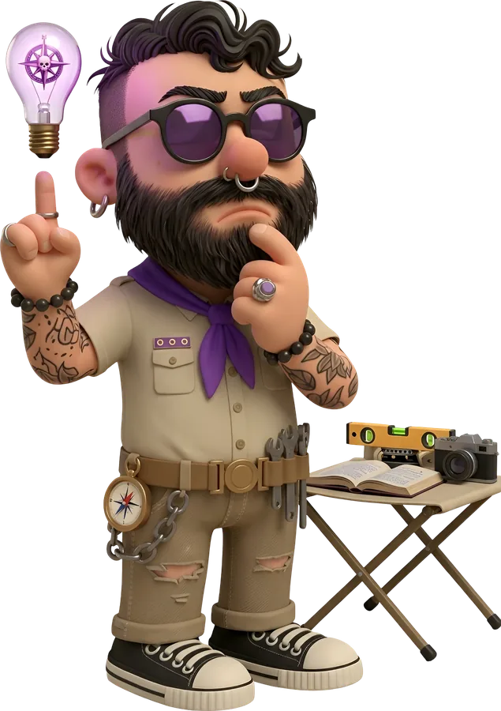
DEL CONTENIDO AL UNIVERSO
Arrastra la línea del tiempo: de una obra cerrada a un ecosistema de experiencias conectadas.
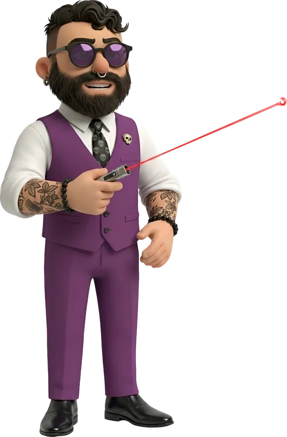
MULTIMEDIA, CROSSMEDIA Y TRANSMEDIA
Un mismo ejemplo, tres lógicas. Ejemplo ficticio: “La Casa del Faro”, una leyenda de barrio.
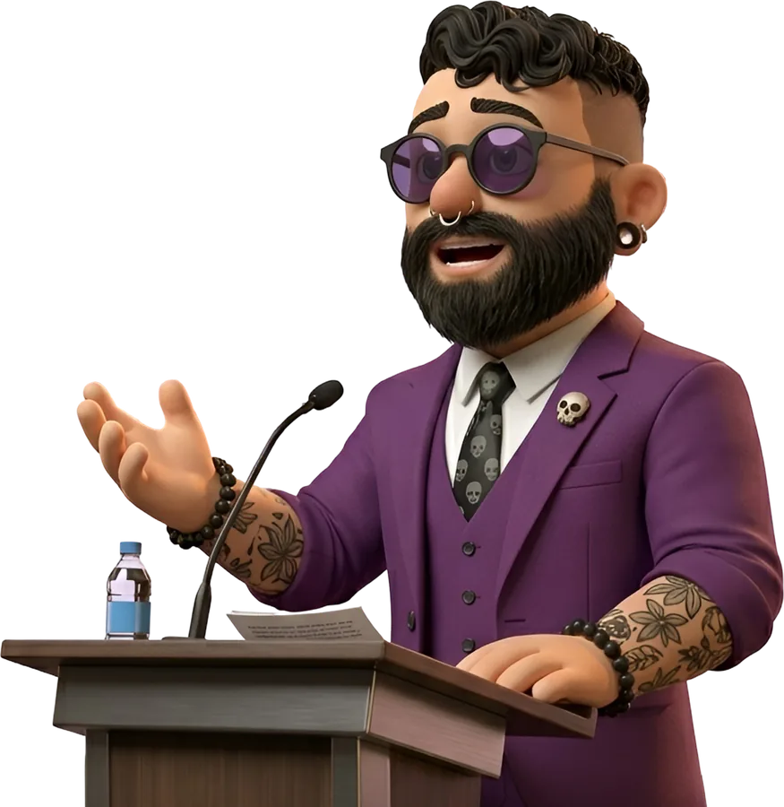
LAS REGLAS DEL JUEGO TRANSMEDIA
Siete principios para que un universo crezca sin romperse. Toca una carta para ver cómo se aplica.
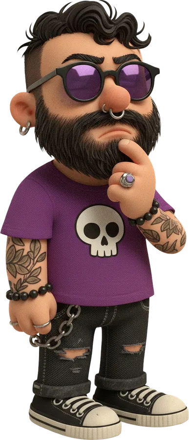
ANATOMÍA DE UN UNIVERSO
Seis componentes que funcionan como un sistema: si uno cambia, todos se mueven.
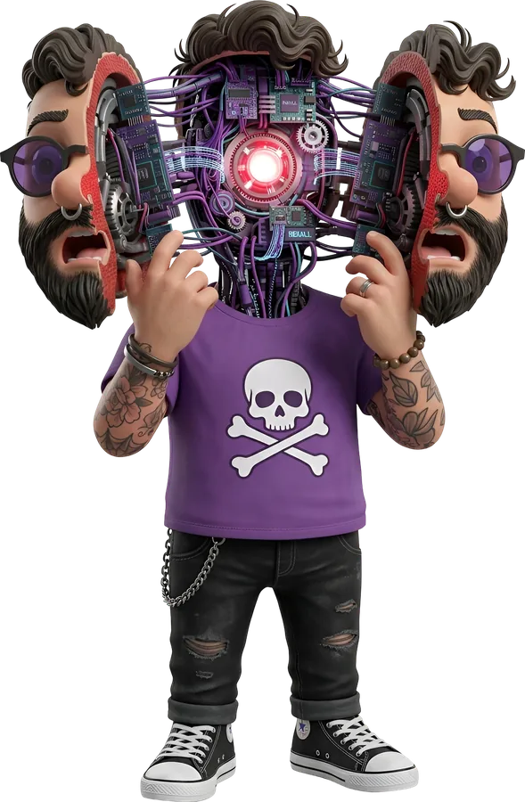
WORLDBUILDING: CONSTRUYENDO MUNDOS
Genera un mundo, fija lo que te sirva (candado) y vuelve a lanzar el resto.
Las reglas crean libertad: definen lo que puede y lo que nunca puede pasar.
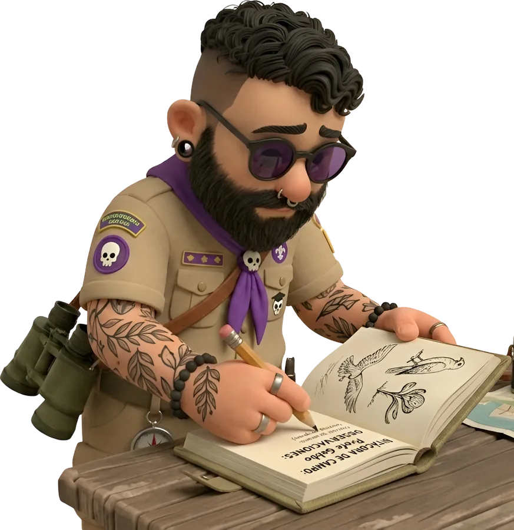
PERSONAJES QUE EXPANDEN HISTORIAS
Caso vivo: el propio Profe Gabbo. Una identidad fija —gafas, barba, calavera— y muchas historias posibles.
EL MOTOR NARRATIVO
Construye una logline en vivo: máximo 40 palabras, con conflicto y algo en juego.
// Logline
0 / 40 palabras
PremisaLoglineConflictoSubtramasMisteriosExpansión
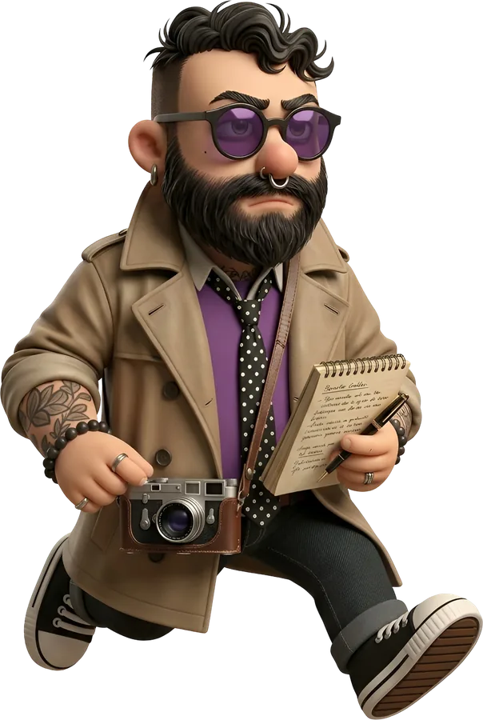
LA AUDIENCIA TOMA EL CONTROL
Sube la escalera: el público pasa de mirar a co-crear. ¿Hasta qué peldaño llega tu universo?
ProsumidoresComunidadesInteractividadCreación colectiva
ARQUITECTURA DE EXPANSIÓN
¿Qué experiencia nueva vive el público en cada plataforma?
UNA HISTORIA, MÚLTIPLES EXPERIENCIAS
Cada medio tiene un superpoder. Voltea las cartas: lo que mejor hace → lo que aporta a “La Casa del Faro”.
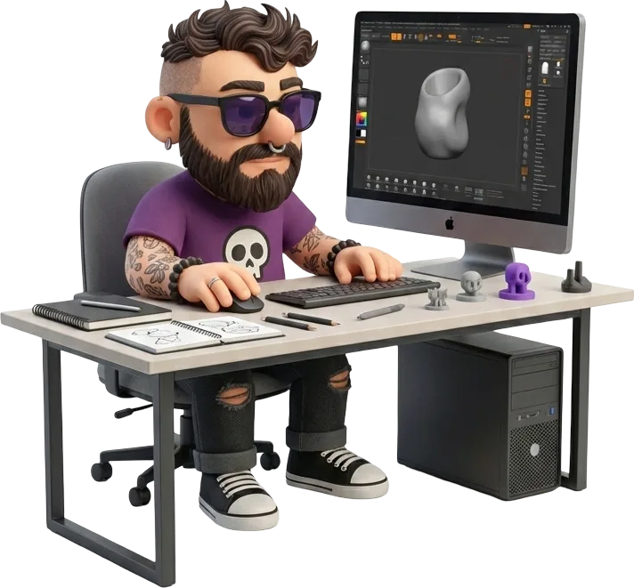
CASO DEMOSTRATIVO: FRECUENCIA 2049
CASO FICTICIO · NO ES UN CASO REAL DOCUMENTADO
Una estación de radio recibe transmisiones de un futuro desconocido. Sintoniza el dial y encuentra las cuatro plataformas del universo.
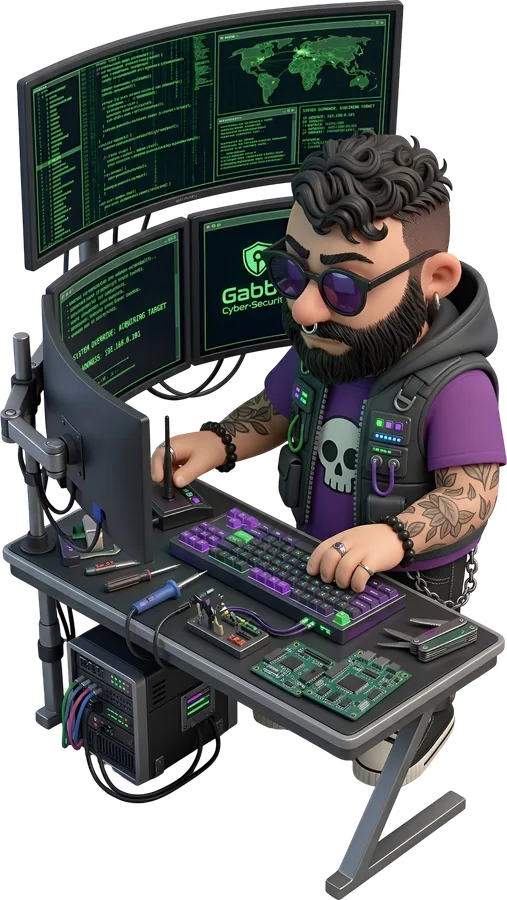
IA: EL NUEVO COPILOTO CREATIVO
Seis momentos donde la IA acelera el trabajo. Las herramientas son sugerencias intercambiables.
Copiloto ≠ pilotoLa dirección, la selección y la decisión final son humanas.
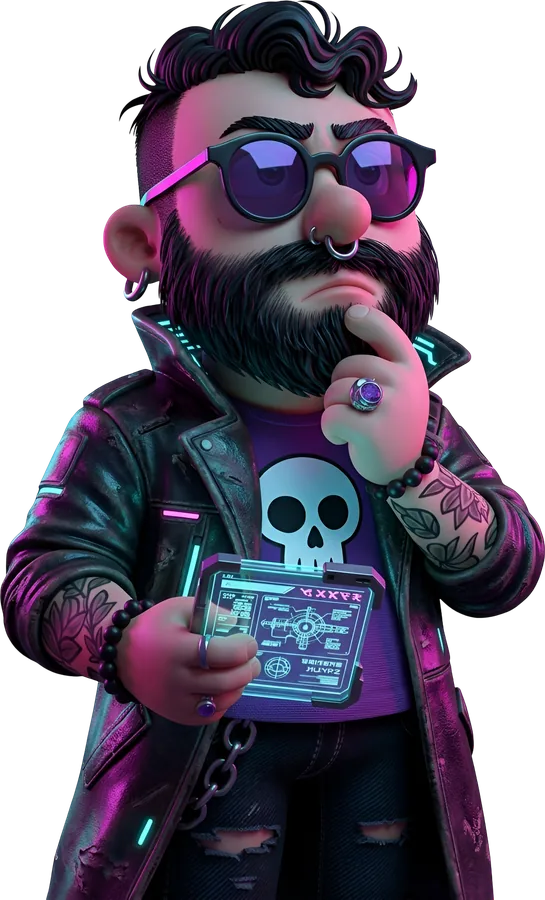
DEL PROMPT AL UNIVERSO
Un flujo en cinco etapas. Toca cada estación para ver qué entra, qué sale y quién decide.
Salidas →TextualesVisualesSonorasAudiovisualesInteractivas
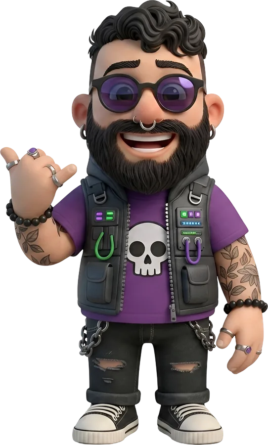
DIRECCIÓN CREATIVA HUMANA
Antes de publicar, pasa cada salida de IA por el filtro humano. Marca lo que ya revisaste.
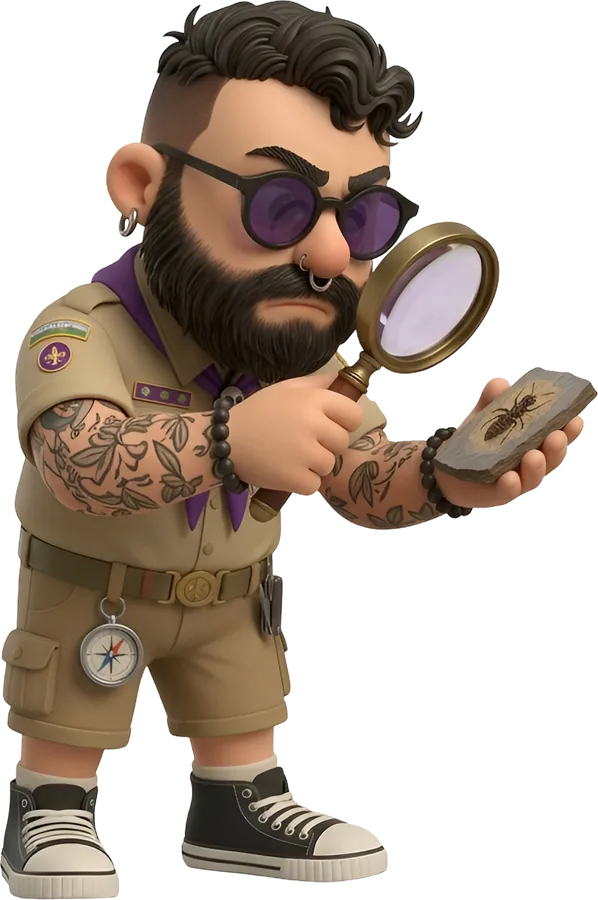
01
FASE 01: LA SEMILLA CREATIVA
Elige un tipo de semilla y escribe tu idea central en máximo tres líneas.
// Chispa aleatoria
Pulsa “Girar” para recibir un detonante.
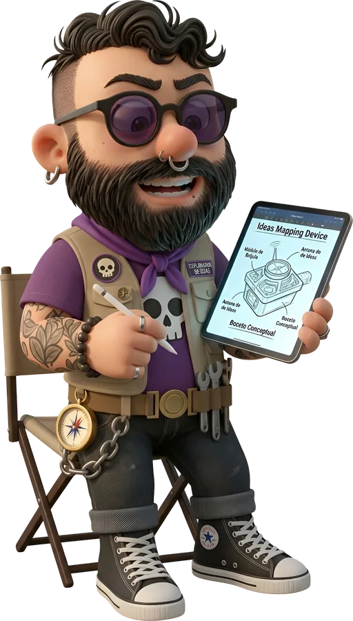
02
FASE 02: CONSTRUYE TU UNIVERSO
La biblia narrativa: ocho piezas que tu equipo debe tener claras.
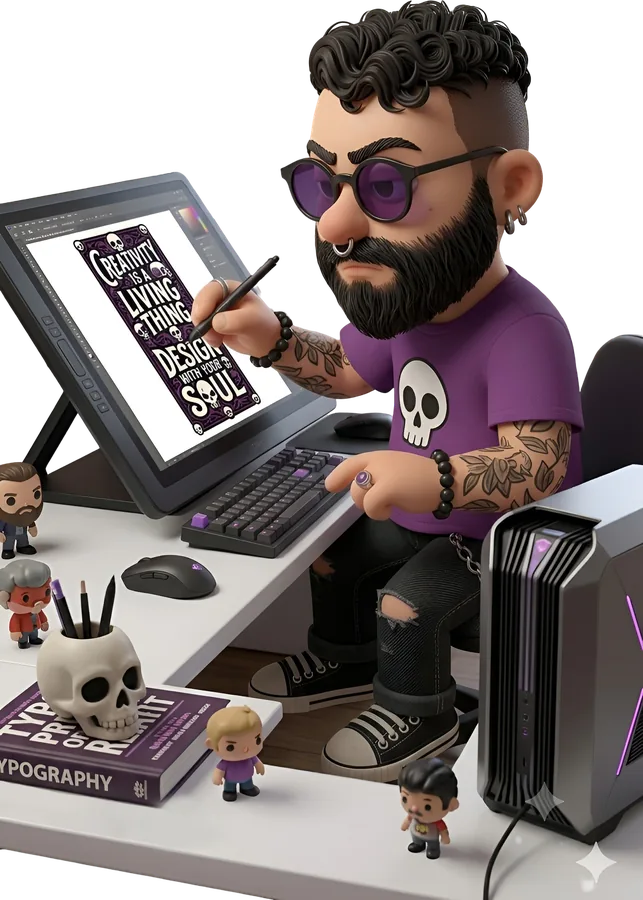
03
FASE 03: DISEÑA LA EXPANSIÓN
Mínimo tres plataformas. Ninguna repite a otra: cada una aporta una pieza distinta.
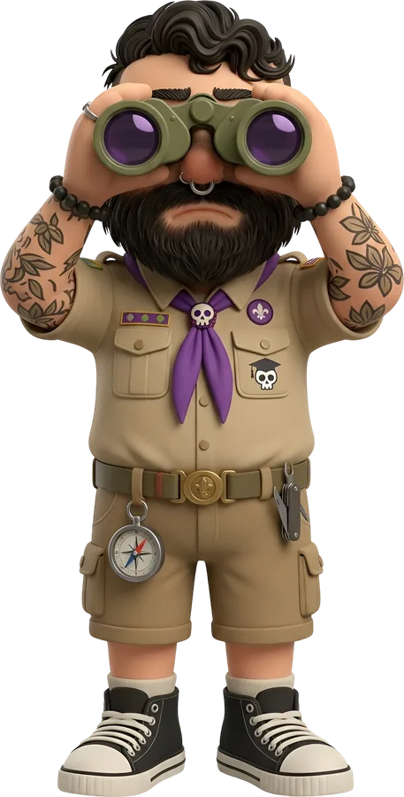
04
FASE 04: PRODUCE CON IA
Tres prototipos, una sola coherencia: misma identidad, funciones narrativas distintas.
05
FASE 05: CONECTA Y PRESENTA
Pitch de tres minutos por equipo. El reloj marca qué pregunta deberías estar respondiendo.
3:00
- ¿Cuál es la idea central?
- ¿Cómo funciona el universo?
- ¿Qué papel cumple cada plataforma?
- ¿Cómo intervino la IA?
- ¿Qué puede hacer el público dentro de la experiencia?
// Retroalimentación del grupoPosibilidades de expansiónInconsistenciasOportunidades de participación
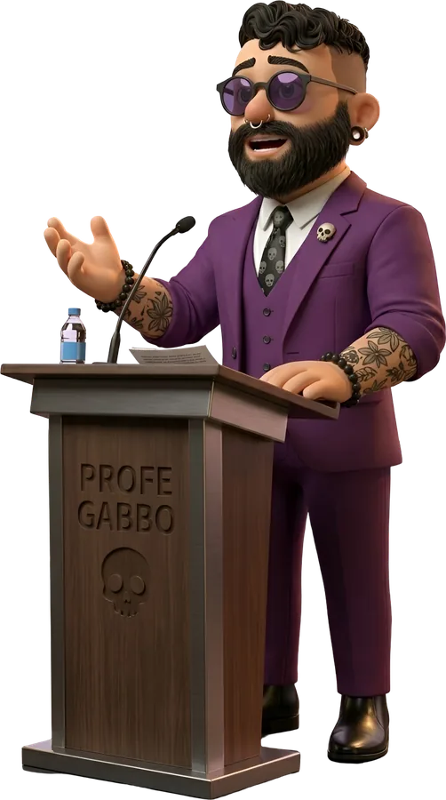
EL DOSSIER TRANSMEDIA
Seis entregables. Marca los que tu equipo ya tiene listos.
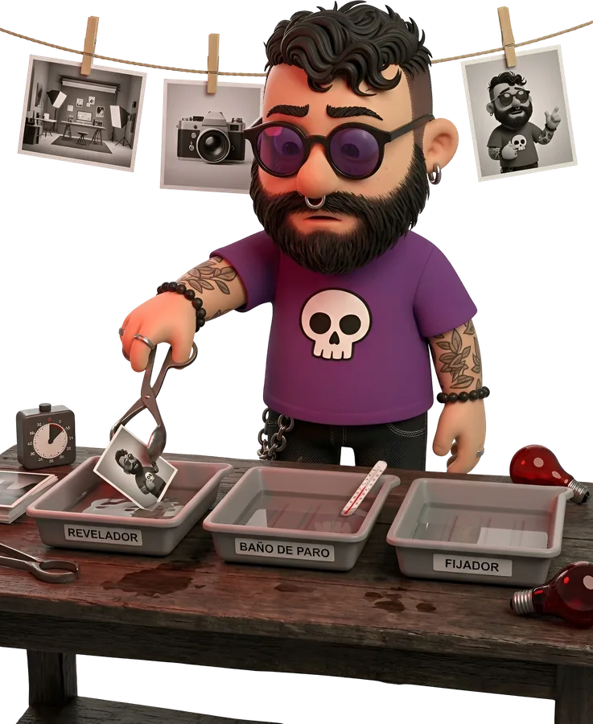
¿CÓMO EVALUAMOS UN UNIVERSO?
Rúbrica de 100 puntos. Úsala para coevaluar: mueve cada criterio.
// Puntaje
0/100
PrincipioUna producción espectacular no es transmedia si las plataformas no aportan valor narrativo diferenciado.
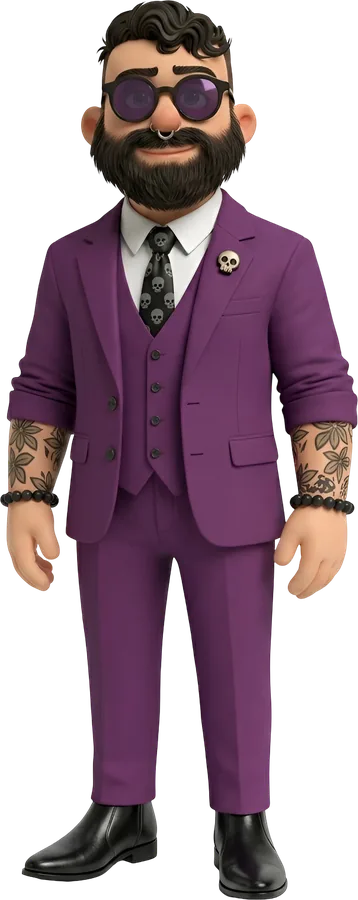
EL UNIVERSO
APENAS COMIENZA
La IA amplía lo que podemos producir. El criterio humano decide qué vale la pena contar.
// Antes de irte
Comparte una decisión creativa que tu equipo tomó, ajustó o corrigió con criterio humano, en lugar de aceptar automáticamente la salida de la IA.